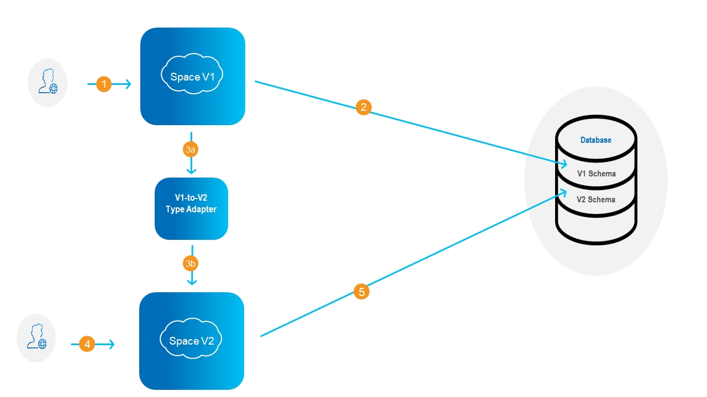
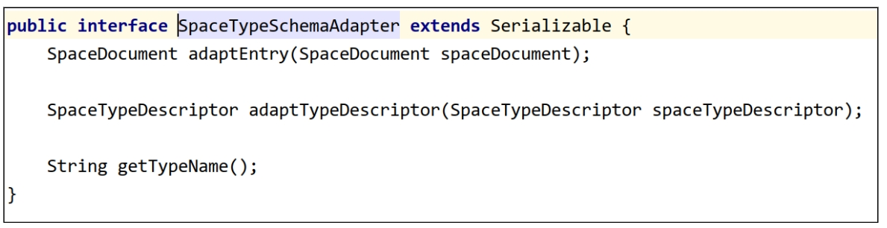
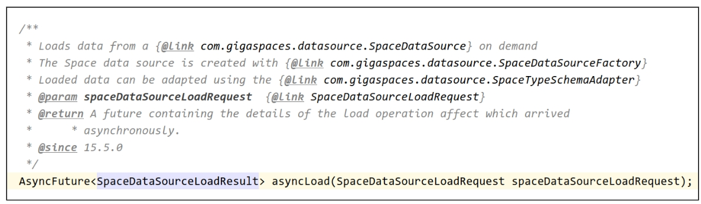
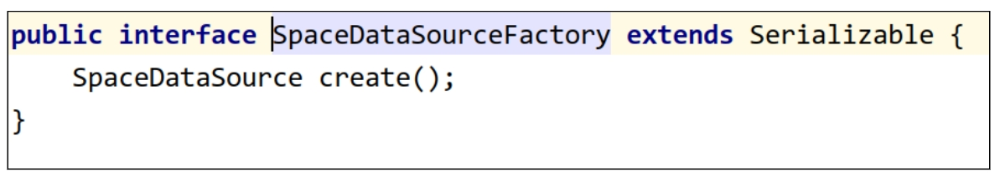
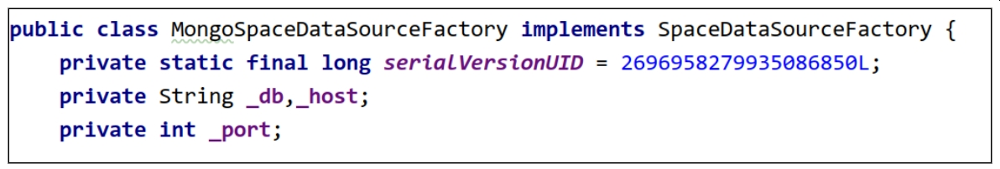
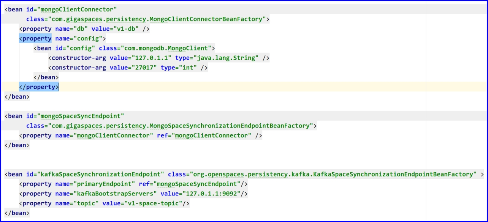
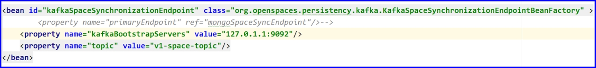
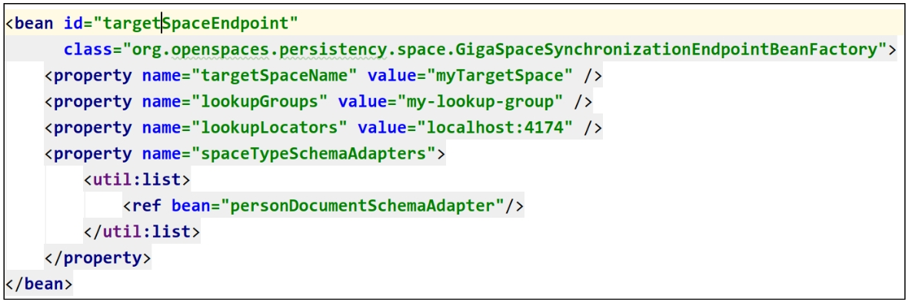

When a Data Store object is defined in
Within each object type, the data schema can be defined with:
The choice of object type and schema definition can have a profound impact on an application's memory footprint and processing speed, and on the procedure required to make a change in the schema.
When a change is required to the underlying structure or schema of an object, this change process is referred to as Schema Evolution.
There are three general approaches for schema evolution:
A summary of these three methods of Schema Evolution is shown in the table below.
| Schema Evolution method | Property Type | Resource usage during schema transformation | Memory footprint of properties | Requires downtime? | Schema strategy | Schema transformation duration | Data transformation | Index functionality |
|---|---|---|---|---|---|---|---|---|
| Option A: Use of dynamic properties | Dynamic | Low | Some overhead | No | In place | Immediate | Null fields by default to v1,v2 holds the new schema | Only equality index, no range index |
| Option B: In-place schema evolution redeploying the space
Time-consuming -- undeploy the data store and any PUs that use the data store; modify the schema; redeploy. |
Dynamic and fixed | Low | None | Yes | In place | Dependent on the space size and network bandwidth to the external DB | All v1 is transformed to v2 | Any index |
| Option C: Side-by-Side Schema Evolution
Create a new data store without downtime. |
Dynamic and fixed | Double the normal memory and CPU requirements | None | No | Side by side | Minutes to hours | All v1 is transformed to v2 | Any index |
The easiest way to achieve schema evolution is via dynamic properties - each entry can store a set of dynamic properties, which are not bound by the type schema. In this case schema evolution is automatic - your app simply starts writing entries with additional properties. No change is required in the space.
The downside is that the memory requirement increases - because there's no schema for those properties, each entry's memory footprint is larger.
This approach is to undeploy the
This results in an efficient footprint in memory, but requires some downtime while the data store is being copied.
The schema evolution process copies each entry from the V1 object to the V2 object. A Type Adapter - a function which transforms V1 to V2 - performs the necessary conversion of the schema, on an entry-by-entry basis, as shown in the following diagram:

While the copying process is underway, all requests are logged for later processing with the new V2 object. No data is lost. There is no downtime and no requirement to make the space offline.
Because
The resulting object has all of the advantages of a fixed schema -- optimal read/write processing and minimal memory footprint -- without a need for the system to interpret dynamic fields.
The following types of changes can be performed:
Since
Capacity planning should include the CPU and RAM resources to accommodate both spaces, V1 and V2 side-by-side during the Schema Evolution process.
In order to implement side-by-side Schema Evolution, three basic components or building blocks are required.
Two APIs are invoked for
This API is used to convert data from the V1 schema to the V2 schema.

The type adapter is implemented by the user for each type they plan to adapt. The typeName is used to fetch the specific type adapter.
Notes:
In order to use it in schema evolution, the adapter(s) must be present in the CLASSPATH of the new service.
The adapters are used in two places: when uploading the V1 Space data source, and when redirecting V1 traffic to V2.
The SpaceDataSource API is an existing feature that enables loading data from an external data source (database, s3 etc.) upon service deployment. (see here).
With dynamic data source loading, the service can load the data source at any given time. This new API also allows an optional adaptation of the data during the loading.
The API starting point is the asyncLoad method was introduced:

The data load request contains two pieces of data: the connection to the data source and an (optional) collection of type adapters.
The data source connection is wrapped in the SpaceDataSourceFactory interface:

The product provides a packaged implementation for a MongoDB data source:

TBD: The load execution result
The mirror service is responsible for persisting Space data to a user-defined endpoint (database, files, S3 etc.). There is a single mirror instance per service, and data from all partitions is funneled to it.
In a regular usage of the mirror, the data is persisted directly to the user-defined endpoint. The new enhanced mirror uses Apache Kafka as a buffer between the mirror and the physical endpoint.
Apache Kafka is a highly available, scalable message-based application with parallel multi-message writes/reads (in Kafka terminology, producer/consumer). Instead of persisting Space data directly to the endpoint, data is persisted to Kafka as a Kafka message. Another mirror process is responsible for consuming the Kafka messages and persisting them to the “real” endpoint.
Without this enhancement, endpoint persistence failures would result in a slowing of the service and a larger memory consumption. With Kafka as a buffer, failures in the physical endpoint will not affect the service functionality. This enhancement also enables stopping the endpoint persistence for extended periods of time (relevant for V1->V2 traffic redirection).
Prerequisites:
A new Kafka endpoint implementation is now part of the

On service deployment, Space data will be written as Kafka messages to a newly-created Kafka topic called “<service-name>-topic”. The consumption process will consume the message of this topic, and write them to the primary endpoint.
NOTE: Here should be a section that talks about Kafka considerations, in terms of capacity planning.
As discussed above, the Kafka mirror allows pausing persistence to the primary endpoint without performance penalty.This pause/resume is done by manually undeploying the mirror service and deploying an new mirror service with the following configuration:

By commenting out the primary endpoint, space data will be persisted only to Kafka. To resume primary endpoint persistence, one should just redeploy the original mirror service.
In the Kafka synchronization endpoint, the user can add secondary persistence endpoints. Each endpoint starts a new consumer process that consumes the mirror messages and persists them to the endpoint. By design, each secondary endpoint persists data from the last message persisted to the primary endpoint, which means it doesn’t consume all previous messages.
Service as a space synchronization endpoint
The final building block of SE is the new GigaSpaceSynchronizationEndpoint implementation. In this implementation, the Space acts as a persistence endpoint to another service. The implementation also allows data to be adapted before writing it to the Space endpoint. After deployment, traffic from the source service will be replicated and adapted to the target service, including write, update and removal of entries.
Configuration uses the following information:

Starting point: A long running service with mirror persistence to a regular endpoint
Preliminary Step: Undeploy the existing mirror service and deploy a new Kafka enhanced mirror service. This requires the existence of a reachable Kafka cluster